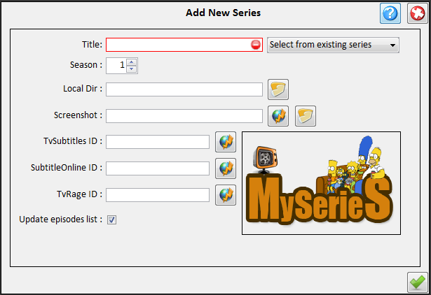
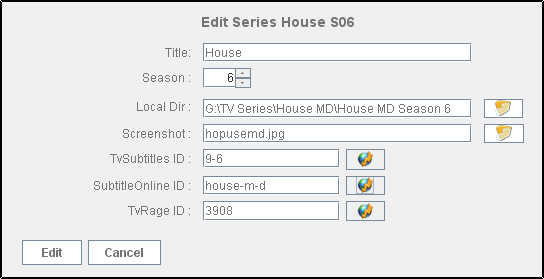

| Series Administration |
|---|
Series Administrations tasks consist of:
- Adding a series:
You can add a series in the following ways:
- Right clicking on the [Series Panel]
and choose "Add a new series"
- Click on Toolbar menu Edit-Add series
Then the Add new series panel will show up:

- Title is the title of the series (eg Stargate Atlantis) and is
required. You can select a different season from a series that's already in
the database by selecting it from the drop down menu
- Season is the series season.
- Quality.You can select the quality of the series.Possible values are High, low or any.This will be
taken in account when you search for torrents or subtitles.
- Local Dir is the path to the directory that contains the series
files(videos and subtitles)
- Screenshot is the screenshot that will be displayed below the
series table when this series is selected,
and in the schedule's calendar the dates that an episode is aired.
The screenshot file is saved in /images directory.You can browse
your PC to add a custom screenshot clicking
the icon,
or you can
download a screenshot from www.tvrage.com by clicking the
icon.
- TvSubtitle ID is the Id of the series in tvsubtitles.net.
This can be found by clicking on the
button
next to the textfield. Check [Internet
Update] for more info.
- SubtitleOnline ID is the Id of the series in subtitleonline.com
database.This can be found by clicking on the
button
next to the textfield. Check [Internet
Update] for more info.
- TvRage ID is the Id of the series in tvrage.com database.
This can be found by clicking on the
button
next to the textfield. Check [Internet
Update] for more info.
- Enabling "Update episodes list" will download episodes info from tvRage.com
when the series is added.
- Editing a series
You can edit a series in the following ways:
- Right clicking on the series you want to edit on the [Series Panel]
and choose "Edit series..."
- Select a series from the [Series Panel] and then click on Toolbar
menu Edit-Edit series...
Then the Edit new series panel will show up:

This is the same as the Add new series panel except that the fields are already filled with the series info.
- Deleting a series
You can delete a series in the following ways:
- Right clicking on the series you want to delete on the [Series Panel]
and choose "Delete series..."
- Select a series from the [Series Panel] and then click on Toolbar
menu Edit-Delete series...
Deleting a series will not actually delete it but move it to the recycle bin.
- Restoring Series
You can restore or totaly delete previously deleted series by clicking [Recycle Bin] in the series menu.
|